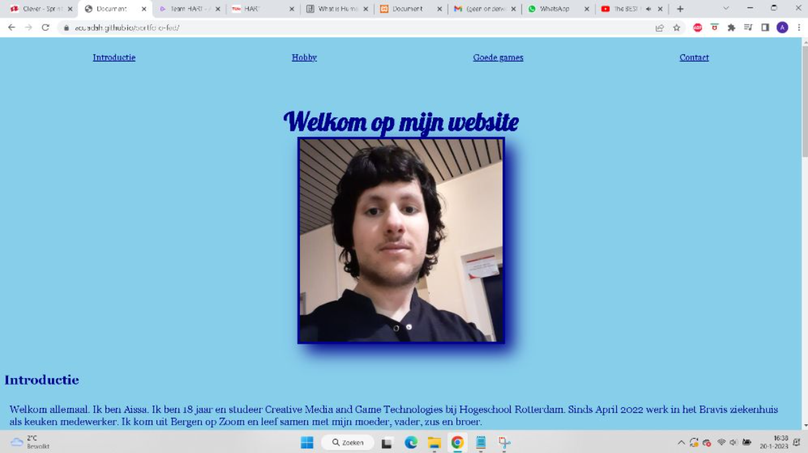

Tijdens mijn eerste programmeervak leerde ik kennismaken met HTML en CSS. Dit was de eerste keer dat ik heb geprogrammeerd, dus ik vond alles super spannend. Ik moest ook voor een tijdje werken met Javascript, maar deze taal werd nauwelijks behandeld tijdens de vak.
De eindopdracht voor deze vak was eigenlijk deze portfolio. In de afgelopen anderhalf jaar is deze site veel veranderd. Nu gebruik ik liever Tailwind om deze site mooier te maken, met een beetje CSS.
